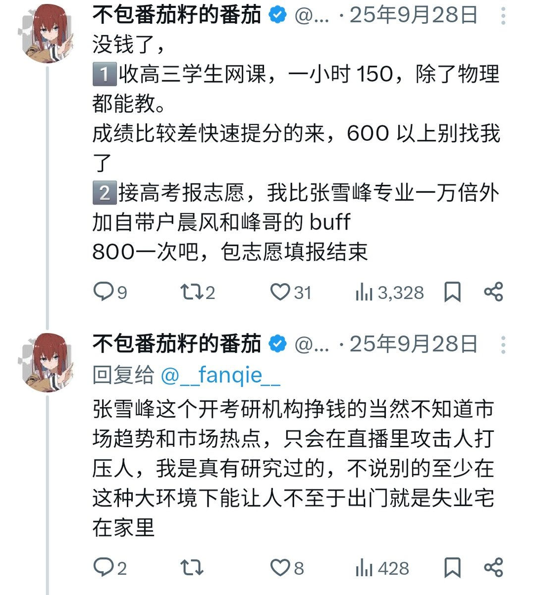

番茄包着番茄籽炒蛋
@bcfqdtfqz
关于我为什么突然做张雪峰这个呢，
主要是最近刷国抖刷多了都是做张雪峰鬼畜的就有感而发做了下，
这人死之前后面公关团队维护形象
人死了以后业务收缩没钱再维护风评了才让你们有机会去做雪毙表情包
另外那些个说我消费张雪峰死人流量的
骗你的其实这畜生活着的时候我也在消费
内容如下👇

不包番茄籽的番茄
@__fanqie__
感觉张雪峰老师最近话少了 https://t.co/jqmT4PluwA